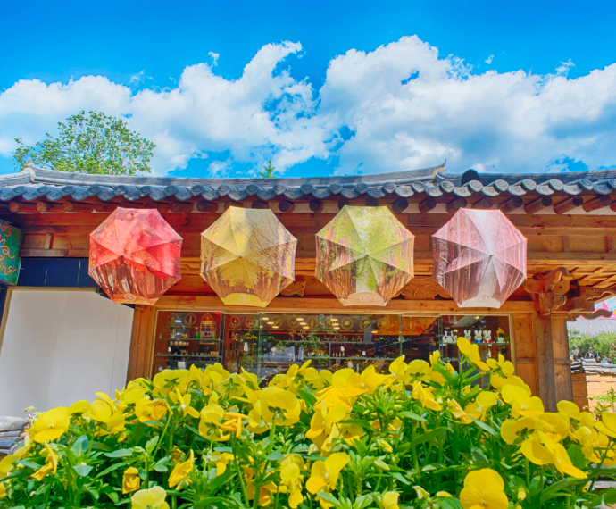
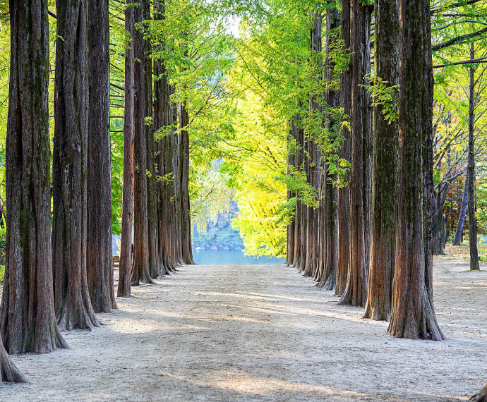

- 10분
- 강원 춘천시 남산면 남이섬길 1
- 031-580-8114
유명 관광지인 남이섬은 배를 타고 들어가는 북한강 위의 반달 모양 섬이다.
남이섬에 입장하면 나무들이 만들어 준 천국이라 해도 과언이 아닐 만큼 아름다운 숲길이 섬 전체를 가득 메우고 있다. 섬 가장자리로 여러 개의 강변 산책길(자전거도로), 수십년 이상
된 나무숲 길이 다수 있으며 푸른 잔디와 축구장, 미니 동물원, 수상레저 등 다양한 볼거리와 즐길거리가 있다. 이 외에도 다양한 전시와 문화행사, 콘서트를 꾸준히 개최하고 있다.